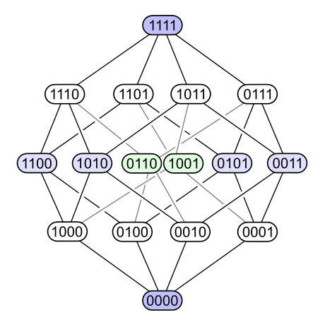

- germane related to a matter at hand; relevant; literally, near akin
- tenuous weak; insubstantial; flimsy; slender
- panache flamboyant confidence of style or manner
- mercurial (of a person) subject to sudden/upredictable changes in mood/mind
- cachet prestige
- inimical harmful/hostile
- detritus dead particulate organic material; includes the bodies or fragments of bodies of dead organisms and fecal material; typically hosts communities of microorganisms that colonize and decompose it
- poset partially ordered set: a set with a binary relation indicating that, for certain pairs of elements, one of the elements precedes the other in the ordering. not every pair of elements is comparable
- Hasse diagram represents a finite poset by drawing its transitive reduction. for a poset (S, ≤), each element of S is a vertex and cureves are drawn between verteces x and y whenever x ≠ y and y covers x

Hasse diagram of the power set of a 4-element set, ordered by inclusion
- teleology a reason or explanation of something which serves as a function of its end, its purpose, or its goal, as opposed to something which serves as a function of its cause
- pecuniary relating to money; motivated by money; monetary
- St. Petersburg paradox counterexample to the principle of maximizing expected value. flip a fair coin until it comes up heads, at that point giving the player $2n, where n is the number of flips. how much should one be willing to pay to play this game? to calculate expected value, sum the products of each outcome with its probability:
\[
\begin{align}
\$2 \cdot \frac{1}{2} + \$4 \cdot \frac{1}{4} + \$8 \cdot \frac{1}{8} &= \$1 + \$1 + \$1 + ... \\
&= \sum_{n=1}^{\infty} \left( 2^n \right) \left( \frac{1}{2} \right)^n \\
&= \infty
\end{align}
\]
the "best" theory of rational choice seems to entail that it would be rational to pay any finite fee for a single play
- countenance appearance; facial expression
- snowclone cliché and phrasal template that can be used and recognized in multiple variants:
- one man's X is another man's Y
- X is the new Y
- the mother of all X
- in space, no one can hear you X
- to X or not to X
- X considered harmful
- X as a service
- neologism relatively recent/isolated term/phrase that may be in the proess of entering common use but isn't fully accepted as mainstream
- eliminativism materialist position in philosophy of mind: the majority of mental states in folk psychology do not exist; no coherent neural basis will be found for things like belief or desire, as they are poorly defined
- glib performed with natural, offhand ease; characterized by fluency of speech or writing that often suggests insincerity, superficiality, or lack of concern
- pugilism the profession or hobby of boxing
- marginalia notes in the margin
- septuagint the Greek old testament; the earliest extant Greek translation of books from the Hebrew Bible
- Matterhorn mountain of the Alps near Switzerland-Italy border
- putative supposed; generally accepted
- Godwin's Law an internet adage asserting that as an online discussion grows longer (regardless of topic/scope), the probability of a comparison to Nazis/Hitler approaches 1.0 (reductio ad hitlerium)
- vociferous (esp of a person or speech) vehement or clamorous
- voluble (of a person) talking fluently, readily, or incessantly